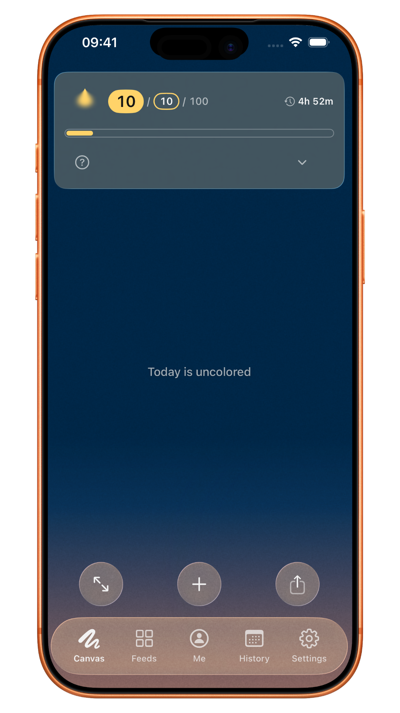
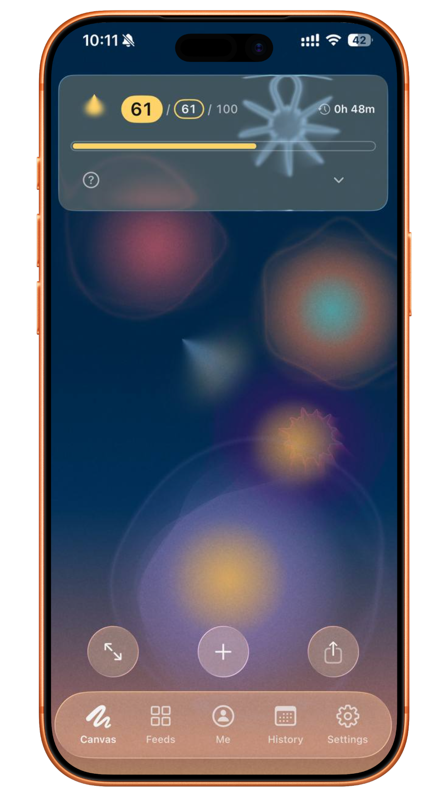
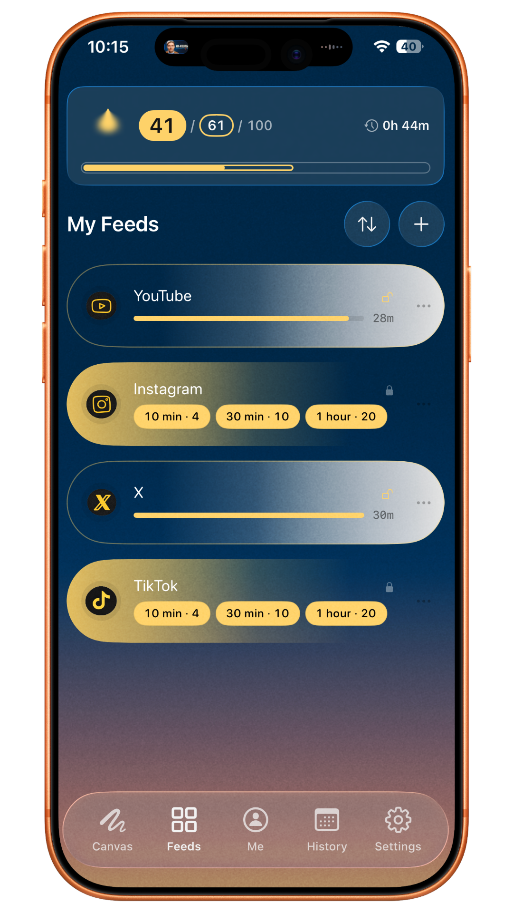
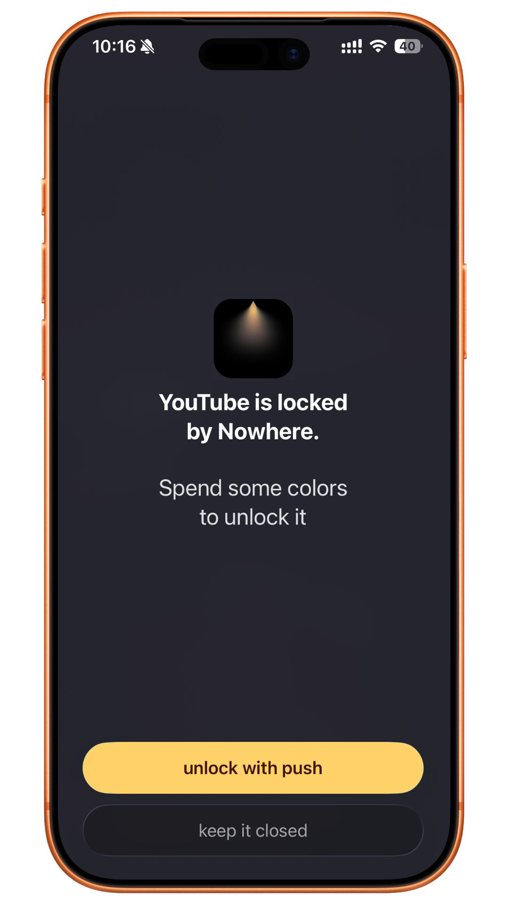
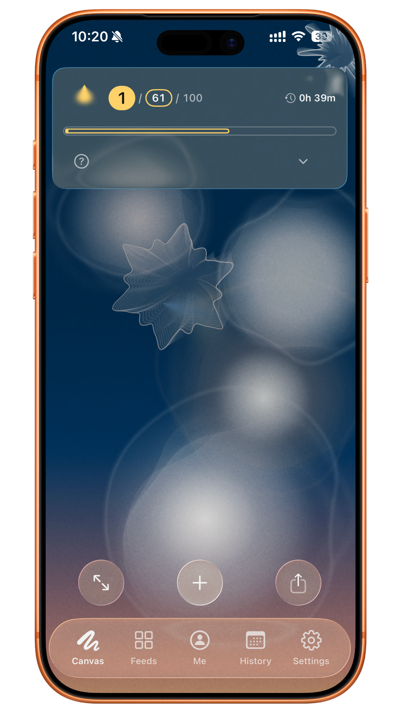
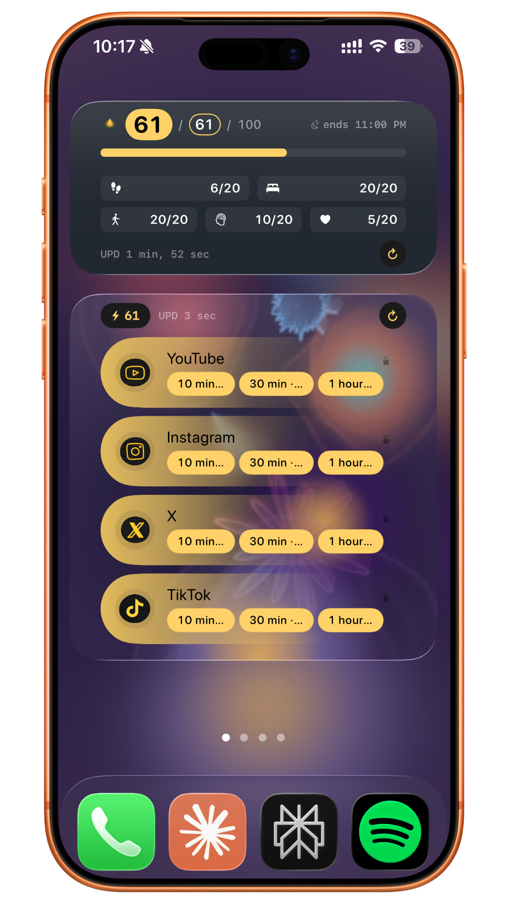

Morning, uncolored
The day starts blank — nothing earned yet.
time on a screen, every day
Sources: DataReportal, 2026 · All About Vision
We all have strong reasons for that much screen time. It only becomes a problem when you stop noticing the real things — the ones that move you, that actually happen — and every day starts to feel like the last.
the science
Your brain keeps what you actually notice. Moments of real attention get saved as memory; autopilot scrolling mostly doesn't. That's how a whole week can pass without one thing you'd point to and call good.
Give a real moment even a few seconds of genuine attention and it lands — it's still there tomorrow. That's the part that stays.
how it works
The day starts blank — nothing earned yet.
Every activity you log becomes color.
Spend color to open your apps.
When it's spent, the app locks again.
Spending empties it back out.
Widgets and a live wallpaper.






from the maker
Hey — I'm Kosta. I built Nowhere on my own, because my days kept blurring into one and I wanted proof there was more to them than the feed.
If you try it, tell me what you honestly think — I read every message. Just write to me.
— Kosta